Chapter 15 — Faster
The November cost review had a spreadsheet, and the spreadsheet had a row that hurt: Atrium — 14 pods × 8 vCPU. Average CPU utilization: 9%.
"Nine percent," the finance controller repeated, in the tone of a man reading a parking ticket aloud. "What is the other ninety-one percent doing?"
"Waiting," Idris said. "Professionally."
It was true, and Maya knew exactly why. After the April outage — the one where two hundred Tomcat threads had parked in socketRead0 and the whole site 503'd while CPU idled — the team had sized the pools by trauma. Big pods, big pools, enough patience tokens that they'd never run out again. The structural fixes had come since: timeouts on every outbound call, a circuit breaker and bulkhead on the Cortexa boundary, the enrichment call made deferrable. The threads almost never all parked anymore. They just sat there, allocated and idle, while Glasshouse paid rent on them. The spreadsheet, Maya thought, was April's napkin corner — virtual threads — later — arriving with an invoice attached.
Then Lena slid the Northbeam renewal rider across the table. "There's a new clause. p99 latency on report submission, five hundred milliseconds, measured monthly. Misses convert to service credits." She tapped the page. "So we need to be cheaper and faster. I'm told that's not how anything works."
Two camps formed by lunch. Priya, freshly WebFlux-curious, had a branch and a gleam: "Event loops. A handful of threads doing all the work, nothing ever blocks, this is what reactive was built for." The other camp was one line of YAML. Maya took both to Elias's office, and Elias — weeks from his last day, and acting like it — held up a hand before she finished the question.
"This one's yours. Show me the numbers."
The investigation
The bake-off ran in staging against a Cortexa stub tuned to realistic latency: 180 milliseconds per enrichment call. The path under test was submission-plus-enrichment as it had actually run since the cascade (September's failure, when a slow synchronous enrichment call held request threads until the whole site queued behind it) — the JPA write answering the researcher straight away, the enrichment call following on its bounded, named executor. A Gatling rig drove it at 1×, 1.5×, and 2× of peak production load, with the Northbeam p99 measured at the submission endpoint. Three contenders.
Baseline: platform threads, the pools they had. Contender two: the flag.
spring:
threads:
virtual:
enabled: true # since Boot 3.2; flips Tomcat workers, @Async,
# @Scheduled and listeners onto virtual threads
Contender three: Priya's WebFlux spike — one endpoint, rebuilt reactive end to end:
public Mono<SubmissionReceipt> submit(SubmissionRequest req) {
return reportRepository.save(toEntity(req)) // R2DBC, not JPA —
.flatMap(saved -> enrichment.score(saved.id()) // JPA would block the loop
.timeout(Duration.ofSeconds(2))
.onErrorResume(e -> Mono.just(Score.pending()))) // the honest badge
.map(SubmissionReceipt::from);
}
Maya stared at that snippet longer than the others. Eight years of hand-sized Jetty pools had trained her that scale meant threads — count them, size them, watch them. This thing rewrote every signature on the way down and turned control flow into a pipeline she couldn't step through in a debugger. Her instinct voted against Priya's camp on reflex. She made a note of that, the way Elias had taught her to note any opinion she'd held before seeing evidence.
The numbers came back Tuesday. The WebFlux spike won the synthetic throughput test — clearly, on that one endpoint, a fraction of the threads at three times the load. Maya put that result at the top of the readout, in bold, before anyone could accuse her of burying it. The numbers don't care about my preference.
Virtual threads matched it almost exactly at 1× and 1.5×, with the existing blocking code untouched. p99 sat at 240 milliseconds. Then the rig ramped to 2×, and the virtual-thread run fell off a cliff: p99 went from 240 milliseconds to eleven seconds in ninety seconds of ramp. CPU stayed near idle. Throughput flatlined. It looked as if someone had reinstalled the old thread pool when nobody was looking.
⏸ Your call. CPU bored, throughput flat at 2× — the old pool's exact signature, on a runtime with no pool. Before the tracer goes on: what ceiling just got reinstalled, by what mechanism — and why do the SLO and the spreadsheet fail together?
Someone effectively had. Maya reran the load with -Djdk.tracePinnedThreads=full. The war-room screen filled with stack traces: virtual threads blocking without unmounting, each trace annotated at the frame that held a monitor.
Priya found it first: java.net.Socket.read at the top, and a dozen frames down, com.cortexa.sdk.transport.PooledConnection.checkout — flagged <== monitors:1. The vendor SDK checked connections out of its internal pool inside a synchronized method, then did blocking socket I/O while still holding the monitor. It did this from inside their nice bulkheaded wrapper.
She read it twice. "It's not even our code."
"It's our process," Maya said. "Keep looking."
A JFR recording — jdk.VirtualThreadPinned events, sorted by count — found the second one, and this one was their code. A utility class from 2018, faithfully signing every outbound Cortexa request:
// glasshouse-common, last meaningful commit: 2018
public final class RequestSigner {
private final MessageDigest digest; // MessageDigest isn't thread-safe,
RequestSigner(MessageDigest digest) {
this.digest = digest;
}
public synchronized String sign(byte[] payload) { // ...so: this
digest.reset();
return HexFormat.of().formatHex(digest.digest(payload));
}
}
One shared signer bean. One monitor. Every outbound request in the company funneling through it.
(If you called pinning at the pause: full credit only if you priced it — every block under a held monitor costs a carrier, of eight.)
What the senior sees
Elias didn't come to the whiteboard session. He sent Priya instead — "ask Maya, she owns this" — so Maya drew it on the Wall, next to the connector box where the Request Journey — the wall-length trace of one request from socket to database and back — began.
"A virtual thread isn't an OS thread," she said. "It's a stack the JVM keeps on the heap. It runs by mounting onto a carrier — a small pool of platform threads, by default one per core, so eight carriers on these pods. When the virtual thread hits blocking I/O, the JVM unmounts it: stack saved to the heap, carrier freed for the next one. You keep writing thread-per-request blocking code; the ceiling on threads just stops existing — a million concurrent virtual threads is unremarkable. Fourteen pods of two hundred precious threads becomes six pods of as many cheap ones as the work needs."
She tapped the connector box where April's napkin math had never been erased. Concurrency in flight equals arrival rate times residence time. Two hundred threads at thirty seconds of residence had once priced a whole pod at six point six requests a second. "Little's law didn't change," she said. "Re-run it with the ceiling removed: residence still costs a heap stack, just no longer a scarce thread. April's arithmetic gets its structural answer — the one filed in the napkin's corner under later."
"It's later," Idris said from the doorway, sounding satisfied.
"So why the cliff?" Priya asked.
"Pinning. On Java 21, a virtual thread inside a synchronized block can't unmount — the JVM can't release the carrier while a monitor is held, and a thread blocked trying to enter a contended monitor pins its carrier too. Eight carriers. The SDK blocks on a socket read while holding its pool monitor: that's one carrier gone for 180 milliseconds, doing nothing. Our signer is worse in the other direction — the work inside is microseconds, but at 2× load every thread in the building queues for that one monitor, and the queue itself eats carriers. A few pinned carriers out of eight, and the whole application is back to standing in line. Enrichment doesn't even run on the request path anymore — it didn't matter. Carriers are a process-wide resource; the pinning taxed everyone, submissions included. We didn't remove the thread-pool ceiling. We lowered it to eight and hid it."
She drew the trap and its exit, in the do-not-erase corner:

The classic offender, she told Priya, was JDBC drivers, historically full of synchronized. The PostgreSQL driver had already migrated its hot paths to java.util.concurrent locks; that was why the database calls came back clean. Vendor SDKs were the new frontier. And the fix had a name and a date — JEP 491, delivered in JDK 24, taught the JVM to track monitor ownership per virtual thread, so synchronized no longer pins there (native-frame pins — a JNI call deep in a driver — are a separate case it doesn't touch) — but Atrium ran the 21 LTS, where synchronized still did. You verify the fix on your runtime when you upgrade; you don't assume it. synchronized had always been free at Meridian, Maya thought. A platform thread didn't care what it blocked inside — the pool just got slower. A virtual thread cared: the monitor quietly nailed it to its carrier and let you find out under load.
"And WebFlux?" Priya asked, a little mournfully.
"WebFlux solves this by never blocking at all — an event loop with a few threads, work expressed as Mono and Flux pipelines, and backpressure so a fast producer can't drown a slow consumer. When you genuinely need that — hundreds of thousands of concurrent connections, streaming, flow control as a first-class concept — nothing else does it. But the costs are structural: the reactive types spread through every signature they touch; a stack trace becomes a tour of Reactor operators; and one blocking call on the event loop — one innocent JPA query — is the cardinal sin that stalls the whole loop. Your spike was honest because it went R2DBC end to end. The real Atrium has seven years of JPA and eleven imperative programmers."
"One more thing," Maya added, tapping the Cortexa box with its September scars — the breaker that remembers their pain (it opens after a failure threshold and fails fast instead of queueing), the bulkhead capping what we'll spend waiting (a hard ceiling on concurrent calls into the SDK). "Virtual threads remove the thread ceiling, not Hikari's connections or Cortexa's tolerance. ADR-013 governs more than before: a million cheap threads crowd a scarce resource faster than two hundred precious ones ever did. The old pool was an accidental bulkhead for everything behind it; now the bulkheads we chose are the only ones left."
Elias appeared in the doorway just long enough to hear the summary, nodded once, and said, "Every free lunch has a coat check." Then he left.
⚖ Your move, architect
Rewind to Tuesday's readout: three sets of numbers, no verdict, a recommendation due Friday. This chapter is the memo — write yours before reading Maya's: your option, its price in dollars, risk, and team, and the trigger that reopens the decision.
- A — Status quo plus autoscaling. No engineering decision; the HPA adds pods when traffic climbs, and the cloud bill absorbs what the architecture won't.
- B — Virtual threads plus the pinning audit. One flag, semantics preserved, ceiling removed; the audit is the standing price.
- C — The WebFlux rewrite. The highest ceiling and the only true backpressure, paid across seven years of JPA and eleven imperative debuggers.
The grading, not the answer: your memo passes if it (1) prices each option in dollars, risk, and team; (2) names the question each one actually answers — "cheaper concurrency?" is not "backpressure?"; (3) ends with the trigger that reopens it. Maya's memo is ADR-015, three pages on — grade yourself against it. One analysis you may not skip: why A is a decision-shaped absence of one.
The fix
The purge came in three moves, smallest blast radius first.
Their own code: synchronized became ReentrantLock, because a virtual thread blocking on a java.util.concurrent lock parks cleanly — it unmounts, and the carrier moves on.
public final class RequestSigner {
private final ReentrantLock lock = new ReentrantLock();
private final MessageDigest digest;
RequestSigner(MessageDigest digest) {
this.digest = digest;
}
public String sign(byte[] payload) {
lock.lock(); // a virtual thread waiting here unmounts;
try { // the carrier is free to run someone else
digest.reset();
return HexFormat.of().formatHex(digest.digest(payload));
} finally {
lock.unlock();
}
}
}
Priya asked the right follow-up — why share one digest at all? A fresh MessageDigest per call would delete the lock entirely. They filed it; the lock shipped the same afternoon, because the cliff was the pinning, not the hashing.
The vendor SDK they couldn't edit, so they contained it: the existing Cortexa wrapper gained a small, dedicated platform-thread executor — sixteen named threads — and every SDK call ran there. Maya wrote the bean herself and commented it the way you label a live wire. The flag they were about to ship had made the obvious construction wrong:
@Bean("cortexaSdkExecutor") // PLATFORM threads, on purpose — under the
ExecutorService cortexaSdkExecutor() { // virtual-threads flag, a casually built
return Executors.newFixedThreadPool( // executor would hand the pinning SDK
16, // virtual threads: a quarantine of nothing
Thread.ofPlatform().name("cortexa-sdk-", 0).factory());
}
A platform thread that blocks is a cost you've budgeted; a pinned carrier is a tax on everyone else in the JVM. A vendor ticket went out the same day with the stack trace attached. Then JFR again, same load profile: jdk.VirtualThreadPinned events down from thousands per minute to single digits, p99 at 2× load holding at 310 milliseconds. The before/after histograms went up on the Wall, taped under the connector box.
The flag shipped to production behind a canary. Two weeks later Idris decommissioned pods with visible pleasure: fourteen down to six, heaps re-sized for the smaller pods, G1 kept as the collector — they discussed ZGC for the latency tail and wrote down not yet, revisit if the SLO tightens — and a low-overhead JFR recording left always-on. The pinning hunt had made converts of everyone. RestClient was confirmed as house standard for outbound calls: blocking, fluent, perfect over virtual threads. WebClient stayed legal only inside genuinely reactive code, and RestTemplate was declared what it was — maintenance mode, not for new code.
Then Idris wired the recording into alerting: a jdk.VirtualThreadPinned events-per-minute threshold that pages like an SLO breach, the Gatling rig kept warm in staging. January's move — the red build that names its own law (an executable architecture rule that fails CI and prints the law it enforces) — aimed at a runtime instead of a package diagram: a fitness function for the concurrency model. Reversible because measured; when the histograms move, the memo reopens.
One experiment remained, because the cost review had two rows. Notifications — small, simple, bursty, idle most of the night — was everything Atrium wasn't. Priya ran it through Spring AOT and GraalVM: ./mvnw -Pnative native:compile, nine minutes of build time, one library needing explicit RuntimeHints. Native image is a closed world: no reflection, no proxies, no classpath scanning at runtime unless declared at build time. You trade away the dynamism you weren't using, Maya thought, and declare the reflection you were. The result: 80-millisecond startup against 3.2 seconds on the JVM, a third of the memory. With startup that cheap, Notifications could scale to zero overnight and cold-start on the first morning event. The same arithmetic, Maya noted in the memo, made native image the natural choice for CLI tools — instant start, no JVM warm-up to amortize before the command exits — and for serverless functions, where billing lives and dies on the cold start. A long-running, JIT-warmed monolith like Atrium sat at the opposite end of that curve.
Atrium, they decided, stays on the JVM — and the memo said why: nine-minute builds on every CI run for a service that deploys daily; seven years of reflection-rich code to audit; and a long-running hot service is exactly where JIT-compiled peak throughput beats an AOT binary. They took the cheap startup wins instead: layered images, so the fat dependency layers stayed cached and an ordinary code change shipped as a thin top layer. They also took a hard look at spring.main.lazy-initialization. Maya rejected it for production in one line: it moves failures from startup to first request, and a startup crash is the system doing you a favor.
Maya wrote the memo — the real deliverable, Elias would later call it — with Lena at the table, because Lena owned the column engineers pretend not to see. The memo priced every option in dollars, risk, and team: whose debugging instincts the runtime matches at 3 a.m. "Cost is an -ility," she said when Priya raised an eyebrow. "It scales, it degrades, it just acquired a contract. Architecture is capital allocation with stack traces."
The decision memo closed with the rule, boxed:
I/O-bound workload + imperative team → virtual threads. Genuine streaming or backpressure needs → reactive, end to end or not at all. Revisit pinning assumptions on every JDK upgrade.
By Friday the memo wore a number in the binder:
ADR-015 — Runtime selection. Context: A cost review (fourteen pods at 9% CPU) met a contractual latency SLO; the I/O-bound monolith paid rent on parked platform threads sized by April's trauma. Decision: Virtual threads on Atrium — thread-per-request semantics kept, pool ceiling removed — after a load-tested bake-off and a pinning audit (
synchronizedhotspots →ReentrantLock; vendor code quarantined on a platform pool); WebFlux declined (rewrite cost across seven years of JPA, team-model mismatch), the genuine streaming/backpressure case named; GraalVM native image for Notifications only, where scale-to-zero pays its build and closed-world tax; the JIT-warmed monolith stays on the JVM. Consequences: Throughput per pod rises with imperative code intact (fourteen pods → six); accepted costs: the pinning audit as a permanent review item on JDK 21, native image's build/reflection tax confined to one small service. Re-evaluate on: JDK releases that relaxsynchronizedpinning, traffic that turns streaming, an SLO tighter than carriers can serve.
One green line
Priya archived her WebFlux spike herself, with a writeup titled "What Reactive Would Cost Us, With Numbers" — prouder of the analysis than she'd been of the branch. "The process convinced me more than the verdict did," she admitted, and Maya heard a sentence she might have said in February.
The memo came back from Elias on paper, as everything did. No margin notes. No questions. One line of green ink at the bottom:
Ship it. And the day this stops being true, write the next one.
It took Maya a moment to place the sentence: ADR-015's re-evaluation clause, in green. He'd been writing decisions with expiry dates all along.
He slid the pen back into his pocket more slowly than usual, and nobody in the room pretended not to understand what had just happened. December was four days away — his last month. Somewhere upstairs, an exec was already composing a hallway request.
The debrief — Ch.15, Faster
Virtual threads vs WebFlux for an I/O-bound service — when do you pick each, and what's the catch with virtual threads? Claim: for an I/O-bound service with an imperative codebase, virtual threads are the right default; WebFlux is for genuine streaming and backpressure needs. Mechanism: virtual threads are JVM-managed stacks that mount onto a small carrier pool and unmount on blocking I/O — thread-per-request semantics without the pool ceiling, with zero code rewrite (
spring.threads.virtual.enabled=true, since Boot 3.2); WebFlux instead removes blocking entirely via an event loop andMono/Fluxpipelines with backpressure. Trade-off: virtual threads keep blocking-style code, debugging, and stack traces, but offer no flow control; reactive gives backpressure and extreme concurrency at the price of contagious types, operator-soup stack traces, and a hard ban on blocking the loop (JDBC is the cardinal sin). Failure mode: pinning — on Java 21 a virtual thread blocking insidesynchronized(or native frames) can't unmount and holds its carrier; a few pinned carriers out of ~one-per-core and the app silently reacquires a tiny thread-pool ceiling. Detect with-Djdk.tracePinnedThreadsand JFR'sjdk.VirtualThreadPinned; fix withReentrantLockand by quarantiningsynchronized-heavy vendor code on a dedicated platform pool.
THE ARCHITECT'S LENS
- -ilities at stake: Cost, promoted to first class — the memo prices every option in dollars, risk, and team capability; runtime selection is capital allocation with stack traces — and performance (the contractual p99), which usually trades against cost; virtual threads are the rare move serving both. The bake-off and the pinning tracer are fitness functions — evidence, not vibes — keeping the decision reversible.
- The ADR: ADR-015 — runtime selection: virtual threads on Atrium after a bake-off and a pinning audit; WebFlux declined, its genuine case named; native image for Notifications only, the monolith staying on the JVM; re-evaluation triggers (JDK pinning fixes, traffic-shape changes, a tighter SLO) written into the record — a decision with an expiry date.
- Rejected alternatives: autoscaling the status quo (a linear cloud bill standing in for a decision); the WebFlux rewrite (a backpressure answer to a question Atrium never asked, at rewrite prices); native image for the monolith (nine-minute builds, a reflection audit, and JIT beats AOT where hot services live); ZGC and
lazy-initialization(not yet and no, with reasons — recording non-decisions is also architecture). - Fight or lean: Lean on the platform — one flag flips Tomcat workers,
@Async, and@Scheduledonto virtual threads;RestClientover virtual threads is the house's outbound story. Fight the monitors —synchronizedin 2018 utility code and vendor SDKs silently re-installs the ceiling; the audit, the tracer, and the quarantine pool are permanent disciplines, not a one-time purge.
Story anchors
- Fourteen pods at 9% CPU → blocking-I/O economics: thread-per-request means paying rent on parked threads, sized by trauma instead of arithmetic.
<== monitors:1on the war-room screen and Priya's "it's not even our code" → pinning:synchronizedplus blocking I/O nails the virtual thread to its carrier; vendor SDKs and old JDBC drivers are the classic source.- Notifications starting in 80 milliseconds after a nine-minute build → GraalVM native image: startup and memory bought with build time and a closed world — worth it for scale-to-zero, wrong for the hot monolith.
- The memo written with Lena — dollars, risk, team, an expiry clause → cost as a first-class -ility: runtime selection as a priced decision, kept honest by ADR-015's re-evaluation triggers.
Interview ammo
- Kill-shot #10 — virtual threads vs WebFlux for I/O-bound work, and the virtual-threads catch? Virtual threads for I/O-bound imperative codebases (blocking model kept, pool ceiling gone via carrier mount/unmount); WebFlux only for real streaming/backpressure needs; the catch is pinning — on Java 21,
synchronizedaround blocking calls holds the carrier and silently restores a tiny ceiling. - Follow-up: would you ever pool virtual threads? Never — they're cheap and disposable by design, and pooling reinstates the very ceiling they remove; if a downstream resource is scarce, bound concurrency with a
Semaphore, not a pool. - Follow-up: if virtual threads make blocking free, why does WebFlux still exist? Because backpressure is a semantic, not a throughput hack — when a consumer must slow a producer or you're streaming unbounded data,
Flux's flow control is the feature, and no amount of cheap threads provides it. - Architect follow-up — a team lead asks "should we rewrite this service reactive?" What's your first move? Reframe before pricing: "reactive?" usually means "cheaper concurrency?", which virtual threads answer for one flag plus a pinning audit; reserve WebFlux for the question it answers — backpressure, extreme fan-out streaming — and settle it with a bake-off and a pinning detector, not conviction.
Pointers → Playbook Ch.12 · examples/ch12_extensions/ReactiveStackAndClients.java, examples/ch12_extensions/NativeImageAndAot.java, examples/ch06_server/VirtualThreadPinningTrap.java